insurancedata <- read.csv("data/insurance.csv")
names(insurancedata)[1] "age" "sex" "bmi" "children" "smoker" "region" "charges" How to name every variable and give every answer choice a number before anyone exports
This chapter is the team’s checklist for the Qualtrics survey before any data is exported. Researchers first see why variable names matter (a dataset named Q1 to Q7 is unusable; a dataset named AGE, HEALTHSTATUS, STIGMA_PUB1 reads itself), then learn the naming rules for export tags: ALL CAPS and short, NAME1 for multi-item measures, BIG_SMALL1 for subscales, _R for reverse items, _01 for yes/no variables coded No = 0 and Yes = 1 and named for the 1, _QUAL for open-ended questions, named survey blocks, and CAT reserved for categories created later in R. They work through two examples from the lab dataset (the two-subscale stigma measure and the ten-item K10), set the shared class variables (CONSENT, TIME, GENDER, RACIALIZED), recode every answer choice to a number (scales start at 1, true zeros such as “none” start at 0, -99 for Prefer not to say and -50 for Don’t know), fill in the Team Codebook Template, publish the survey, and export the survey questions to Word with the coded values showing. Teams do this together, and they export the Word file twice: a draft right after this meeting, and a final version during the October 9 lecture.
qualtrics, export tags, recode values, codebook, naming rules
When data collection ends, your team will export the survey from Qualtrics and then import it into R (quantitative track) or NVivo (qualitative track). Each team member will make a copy of the shared team dataset for their individual reports. Then, your teammates will move forward with coding for your individual questions. If you identify a mistake in your exported team data after you have exported the team dataset, the team cannot merge the dataset in R with the dataset in NVivo to analyze results for any mixed-methods research questions. There is no fixing this afterwards. The best way to avoid this problem is to follow the steps in the green box below that overviews the upcoming chapter.
Your team should use your team meeting or team time during lecture to follow these steps together before anyone exports or downloads your Qualtrics survey data.
Name every variable in your Qualtrics survey → Recode every answer choice so there are numerical values assigned to all of the response options → Check with the team codebook → Publish your Qualtrics survey again → Export your survey questions to Word with the coded values showing (the last section of this chapter).
When: team time in the October 2 lecture. By the end of that lecture, your team’s Google Drive should have the two files described at the end of this chapter.
Safe: renaming a variable (the export tag) and recoding values. Qualtrics applies both to every response already collected, at export time.
Not safe: adding, deleting, or rewording answer choices, or moving questions between blocks. Those change what respondents saw, so responses before and after the change are not comparable. If you must, write down the date and tell your peer mentor and/or Dr. Shane.
In Coding a Plot, the first thing you did with the insurancedata dataset was look at its variable names and its first rows:
insurancedata <- read.csv("data/insurance.csv")
names(insurancedata)[1] "age" "sex" "bmi" "children" "smoker" "region" "charges" | age | sex | bmi | children | smoker | region | charges |
|---|---|---|---|---|---|---|
| 19 | female | 27.900 | 0 | yes | southwest | 16884.924 |
| 18 | male | 33.770 | 1 | no | southeast | 1725.552 |
| 28 | male | 33.000 | 3 | no | southeast | 4449.462 |
| 33 | male | 22.705 | 0 | no | northwest | 21984.471 |
You could read that table without a codebook. age is an age, smoker says whether the person smokes, charges is what their insurance cost. Each name is short enough to type in a line of code and long enough to say what the column holds. That is the goal for your team’s survey: when you type names(alldata) in October, every name should tell you what the variable is without spelling out the whole question.
Here is the same table the way Qualtrics exports a survey when nobody has named the questions:
| Q1 | Q2 | Q3 | Q4 | Q5 | Q6 | Q7 |
|---|---|---|---|---|---|---|
| 19 | female | 27.900 | 0 | yes | southwest | 16884.924 |
| 18 | male | 33.770 | 1 | no | southeast | 1725.552 |
| 28 | male | 33.000 | 3 | no | southeast | 4449.462 |
| 33 | male | 22.705 | 0 | no | northwest | 21984.471 |
Now Q5 is the smoker question and Q7 is the cost, and you will forget which is which by next week. Every line of code you write, every plot label, and every table in your report will carry these names, and so will the NVivo project your qualitative teammates build from the same export. A name typed once in Qualtrics, before the export, saves the whole team from decoding Q17 for the rest of the semester. The rest of this chapter is how to do it.
In Qualtrics, the variable name is the question export tag: the name that becomes the column header when you export the data, and the name R and NVivo will use. Every question shows its current name in small text at its top left, and Qualtrics starts them all as Q1, Q2, Q3, … Naming a variable means replacing that. The rules for the names come first (7.3.1); where you type them depends on the kind of question (7.3.2 to 7.3.4).
Aim for 6 to 10 characters for the measure’s name, and 14 or fewer for the whole tag including the subscale and the item number (AVOID_SLEEP1 is 12). That is short enough to read in a column header, in a plot legend, and in a line of R code, and long enough to be decoded without the codebook.
The tools will let you go longer, so the limit is readability, not software: R accepts names up to 10,000 characters, and Qualtrics only truncates an export tag when you export to SPSS, which cuts at 64. A name that needs 30 characters usually needs an abbreviation instead: Health Information Avoidance becomes AVOID, Kessler Psychological Distress becomes DISTRESS. Put the full name in your team codebook, where the variable name abbreviation gets explained once.
| Rule | Do this | Not this |
|---|---|---|
| ALL CAPS | EFFICACY |
selfefficacy |
No spaces or symbols (letters, numbers, and _ only) |
SELFEFFICACY |
SELF EFFICACY, self-efficacy |
| Short: 14 characters or fewer. Qualtrics cuts long tags off, and R code is easier to read | EFFICACY |
EFFECT_EDUCATI (this is what a cut-off tag looks like) |
| One measure, several items: NAME plus the item number, no underscore | WELLBEING1 … WELLBEING8 |
WELLBEING_1, WB1, Wellbeing item 1 |
| One measure with subscales: BIG_SMALL plus the item number | STIGMA_PUB1, STIGMA_SELF1 |
PUBSTIG1, SS1 |
Reverse item: add _R at the end (see below) |
STIGMA_PUB4_R |
STIGMA_PUB4rev, STIGMA_PUB4 (reversed) |
Same measure at two times: _PRE and _POST (or _T1 and _T2) |
EFFICACY1_PRE, EFFICACY1_POST |
EFFICACY1, EFFICACY1b |
Binary (yes/no) variable: add _01, code it No = 0, Yes = 1, and name it for the answer that gets the 1. No CAT: CAT is only for categories you create later in R |
TREATED_01 (0 = has not received mental health treatment, 1 = has); KNOWS_01 (0 = does not know anyone with a mental health problem, 1 = does) |
TREATMENT, MHTX, TREATED_01, TREATED coded yes = 1, no = 0 |
A categorical variable you will create later in R by transforming a variable that is already in the survey (cutting a score into bands, or collapsing a question’s response options into fewer categories): _#CAT, where # is the number of categories the new variable has, and _01CAT when it is a 0/1 split you made. CAT is the mark of a variable you made in R from an existing one, so nothing in Qualtrics ever gets it (Transforming Your Data) |
DISTRESS_4CAT (the ten K10 items summed, then cut into 4 bands), EDUCATION_3CAT (7 education options collapsed into 3), RACIALIZED_6CAT (the select-all boxes combined into 6 categories) |
DISTRESSCATS, EDU3 |
Open-ended (text) question, the answers your qualitative teammates will code in NVivo: add _QUAL (see the box below) |
BARRIERS_QUAL, SENTENCE1_QUAL |
BARRIERS, BARRIERS_TEXT, Q14 |
A block is not a variable: the container of a matrix (and a page-level block) gets the measure’s name plus BLOCK (see 7.4) |
block STIGMABLOCK, variables STIGMA_PUB1 … |
block and variable both called STIGMA |
_QUAL
Any question where the respondent types an answer in their own words is a qualitative variable: it will be exported with everything else, but it is coded in NVivo by the qualitative track, not analyzed in R. Name it VARIABLE_QUAL: BARRIERS_QUAL for “What would make it hard for you to get help?”, SENTENCE1_QUAL for “Why did you choose this sentence length?” after the first vignette.
The ending does three jobs. In the export, every _QUAL column is easy to spot, so the quantitative track knows to leave those columns alone and the qualitative track knows exactly which columns to import as open-ended (NVivo asks you to mark each column as open or closed at import, and getting it wrong means importing again). In the team codebook, _QUAL marks the rows whose values are text, not numbers. And when a quantitative question and its open-ended follow-up belong together (SENTENCE1 and SENTENCE1_QUAL), the shared stem keeps them side by side for the mixed-methods work later.
Two things that are not _QUAL: a number typed into a box (AGE) is a number, and the “Other (please specify)” box attached to a closed question exports automatically as VARIABLE_#_TEXT (for example RACIALIZED_8_TEXT); leave that name alone and treat the column like a _QUAL variable.
A single question gives one answer per person: CONSENT, AGE, HEALTHSTATUS, a yes/no question. In the survey builder, click the question’s name (the Q12 at its top left), type the new name, and press Enter. That is the whole job. You do not need the Recode values dialog for this; its Variable naming checkbox renames the answer choices, not the question.
CONSENT: the name goes on the question where people give consent (the two answer choices), not on the consent-form text above it. Here the name is being typed in place of the old Q#.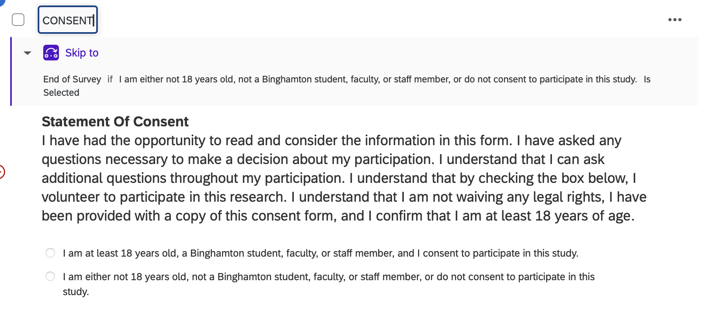
AGE: a single open-number question, renamed in place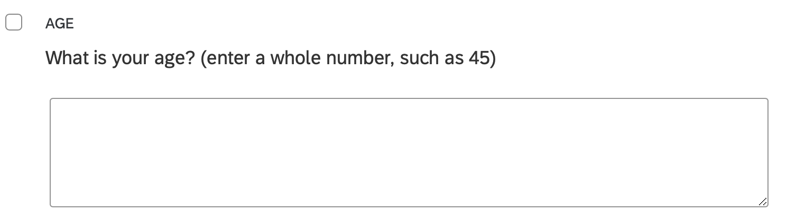
HEALTHSTATUS: a single-choice question, renamed in place. The answer choices get their numbers later, in 7.5.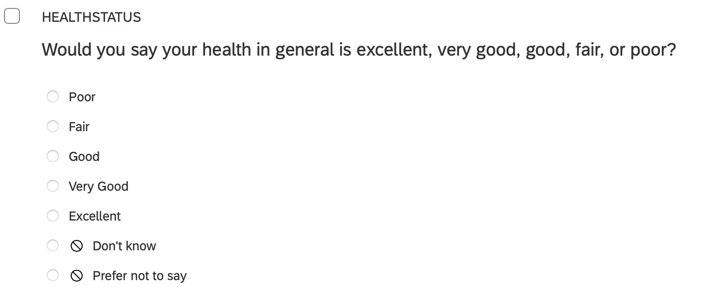
A survey often shows a block of text (the consent form, an instruction, a vignette) as a separate item right before the question people answer. That text item has its own Q#, and it exports nothing. Put CONSENT on the question with the answer choices, as in the screenshot, and leave the consent-form text item alone. The same goes for any instruction text that sits above a matrix.
A matrix question has one instruction and several statements in rows, all answered on the same scale: the stigma items, the K10, a well-being scale. Qualtrics exports one column per row, so it is the rows that need names, and the question name and the row names are set in two different places.
BLOCK (STIGMABLOCK, AVOIDBLOCK; see 7.4). This name is for you; it is not a column in the data.NAME1, NAME2, … for one construct, or BIG_SMALL1, BIG_SMALL2, … when the rows belong to subscales. Add _R to a reverse item. Those row names are what R sees.AVOID is shorthand for Health Information Avoidance, the measure’s name; this is how to name a variable, with a short abbreviation that a reader can decode. The measure has two subscales, so the rows are AVOID_SLEEP1 … and AVOID_MDD1 … (MDD = major depressive disorder), and the last one is being typed.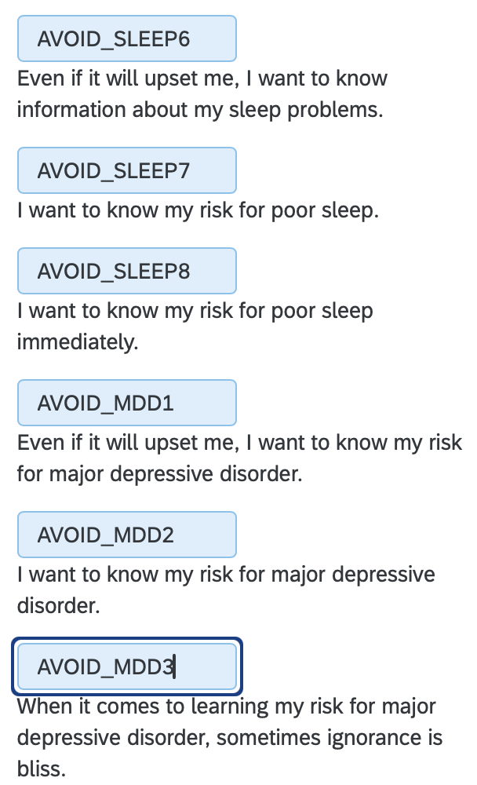
A select-all question (checkboxes, such as the select-all version of RACIALIZED) exports one column per box. Rename the question in the builder (RACIALIZED) and stop there: Qualtrics adds _1, _2, … to the question name for each box, so you do not name the boxes yourself. The values that go into those columns are set in 7.5.
The lab dataset measures stigma with two subscales, public stigma (what a person thinks most people believe) and self stigma (how a person would feel about their own mental health problem). Both are in one Qualtrics matrix. Naming them BIG_SMALL# does two jobs at once: in R, you can score the total (STIGMA, all eight items) and each subscale (STIGMA_PUB, STIGMA_SELF) from the same names, and anyone reading your code can see which items belong together.
| Export tag | Item | Subscale |
|---|---|---|
STIGMA_PUB1 |
Most people would think less of a person who has received treatment for a mental health problem. | public |
STIGMA_PUB2 |
People with mental health problems are partly to blame for their situation. | public |
STIGMA_PUB3 |
Most employers would pass over the application of someone with a history of mental illness. | public |
STIGMA_PUB4_R |
Most people would accept a person with a mental illness as a close friend. | public, reverse |
STIGMA_SELF1_R |
I would be comfortable telling friends that I was seeing a therapist. | self, reverse |
STIGMA_SELF2 |
I would feel ashamed if I needed treatment for a mental health problem. | self |
STIGMA_SELF3 |
Seeking help for a mental health problem would make me feel like I could not handle my own problems. | self |
STIGMA_SELF4_R |
If I had a mental health problem, I would feel fine telling my family about it. | self, reverse |
All eight items use the same answer choices: Strongly disagree (1), Disagree (2), Neither (3), Agree (4), Strongly agree (5). Higher = more stigma.
A reverse item is worded in the opposite direction from the rest of its scale. Agreeing with “Most people would accept a person with a mental illness as a close friend” means less stigma, while agreeing with every other item means more.
In Qualtrics: add _R to the export tag, and recode the values exactly as for the other items (Strongly disagree = 1 … Strongly agree = 5), in the same direction.
In R: reverse the _R items with 6 - x (for a 1-to-5 scale) before you average. Creating Composites shows this with scoreItems(), where a minus sign in front of the item name does the reversing.
Why not in Qualtrics? If you reverse the values in Qualtrics and the code in R reverses the _R items, the item gets reversed twice and ends up backwards, and nothing warns you. Recoding the values (7.5) is fine and expected; reversing them is the part that belongs in R. Keeping the raw export in one direction means the reversal is visible in your code, where a reader (and a grader) can check it.
The Kessler Psychological Distress Scale (K10) in the lab dataset has ten items, one construct, and no subscales, so the export tags are simply DISTRESS1 to DISTRESS10, and all ten share one set of answer choices: None of the time (1), A little of the time (2), Some of the time (3), Most of the time (4), All of the time (5). That is all the naming a single scale needs.
| Export tag | In the past 4 weeks, about how often did you feel … |
|---|---|
DISTRESS1 |
tired out for no good reason? |
DISTRESS2 |
nervous? |
DISTRESS3 |
so nervous that nothing could calm you down? |
DISTRESS4 |
hopeless? |
DISTRESS5 |
restless or fidgety? |
DISTRESS6 |
so restless you could not sit still? |
DISTRESS7 |
depressed? |
DISTRESS8 |
that everything is an effort? |
DISTRESS9 |
so sad that nothing could cheer you up? |
DISTRESS10 |
worthless? |
What happens to the ten items afterwards belongs to later chapters: Transforming Your Data cuts the K10 total into its published bands (DISTRESS_4CAT, DISTRESS_01), and Creating Composites scores the scale.
A matrix question is a container: its own name sits at the top left, and the variables are the rows inside it (7.3.3). That container is what we call the block. It is not exported as a column, but its name shows up in the survey builder, the survey flow, and your Word export, and a container called AVOID holding rows called AVOID_SLEEP1 … confuses everyone, including you in three weeks. So give the container a name that says it is a block: click its name at the top left and add BLOCK to the measure’s name, AVOIDBLOCK, STIGMABLOCK. The same goes for the page-level blocks that group questions in the survey builder (CONSENTBLOCK, DEMOGRAPHICSBLOCK).
AVOIDBLOCK (AVOID = Health Information Avoidance), and the statements inside it are the variables AVOID_SLEEP1, AVOID_SLEEP2, … (7.3.3)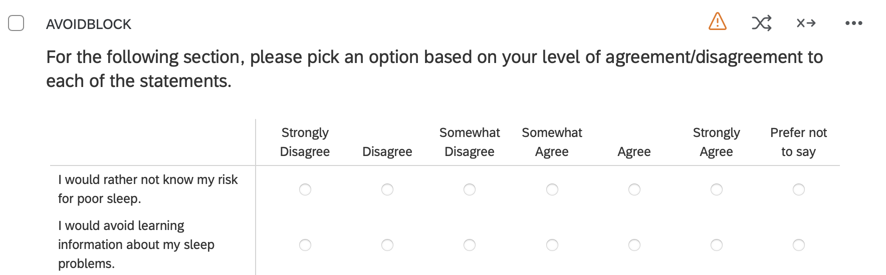
Recoding assigns a number to each answer choice. Click the question, open Recode values in the left panel, and check the Recode values box. A number box appears next to every answer choice; type the values below. Qualtrics exports the numbers; the words are only for the respondent.
| Kind of question | Values | Example |
|---|---|---|
| Consent | 0 = does not consent, 1 = consents | CONSENT (a shared class variable, so it keeps its name) |
| Pretest or posttest | 0 = pretest, 1 = posttest | TIME (pre/post teams; a shared class variable, so it keeps its name) |
| Yes/no, have/do not have | 0 = No, 1 = Yes (the Yes is the thing the variable is named for) | TREATED_01: 0 = has not received treatment, 1 = has |
| “None”, “never”, “I do not have one”, “no benefits”: a true zero | 0, and then 1, 2, 3 … for the real answers (see the example below) | MEALPLAN: 0 = no meal plan, then 1, 2, 3 for the plans |
| Agreement, frequency, or other ordered scale | 1 for the lowest step up to the highest step, in order | Strongly disagree (1) … Strongly agree (5) |
| Categories with no order (majors, states, plans) | 1, 2, 3 … in the order shown; the numbers are labels only | STATE |
| Prefer not to say / Decline | -99 | every question that offers it |
| Don’t know / Not sure | -50 | every question that offers it |
In R, -99 and -50 both become missing (NA) in the first cleaning step (Import Data Once), so they never get averaged into a score by mistake.
Some answer choices mean the absence of the thing the question asks about. Give that choice a 0, and number the real answers from 1. Here is a select-all question about reducing social media use:
| Answer choice | Code |
|---|---|
| Better concentration and focus | 1 |
| Improved sleep | 2 |
| More free time | 3 |
| Increased motivation for hobbies or personal goals | 4 |
| Increased social interaction | 5 |
| Increased productivity | 6 |
| Less stress or anxiety | 7 |
| Less social comparison | 8 |
| Other (please specify) | 9, with the write-in exported as BENEFITS_9_TEXT |
| I did not perceive any benefits. | 0 |
Codes 1 to 8 are all different kinds of benefit; “no benefits” is logically zero of them, so 0 is the number that means what the answer means. The payoff comes in R: because every real benefit is 1 or higher and “none” is 0, one line makes a binary variable, BENEFITS_01 (0 = no benefits, 1 = at least one), and the percent who reported any benefit is its mean (Transforming Your Data). If “none” had been coded 9, it would sit among the benefits and you would have to remember to pull it out every time.
Note the difference from the missing codes: “no benefits” is a real answer, so it gets 0. “Prefer not to say” (-99) and “Don’t know” (-50) are not answers, and they become NA in R.
Qualtrics numbers a yes/no question the way the choices were typed, usually Yes = 1, No = 2. Change it, every time, to No = 0 and Yes = 1, with the 1 on the answer the variable is named for (TREATED_01 = 1 means has been treated). Three reasons:
CONSENT, TIME, and every _01 variable use the same convention, so the same line of code works on every team’s data and nobody has to look up which number means yes.The shared variables follow the rule too: CONSENT is 0 = does not consent, 1 = consents; TIME is 0 = pretest, 1 = posttest. The one place 0 and 1 are not No and Yes is a scale (1 to 5), where 1 is the lowest step, not “no”.
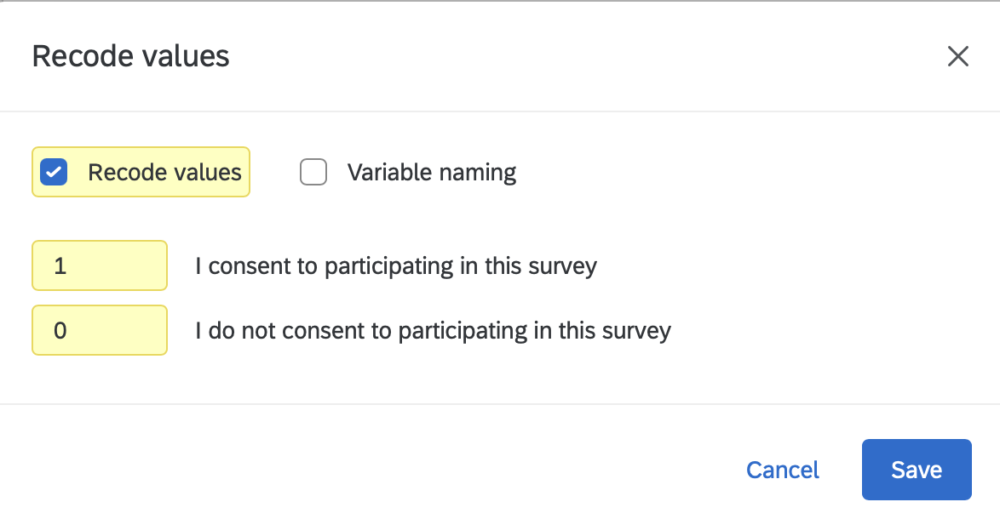
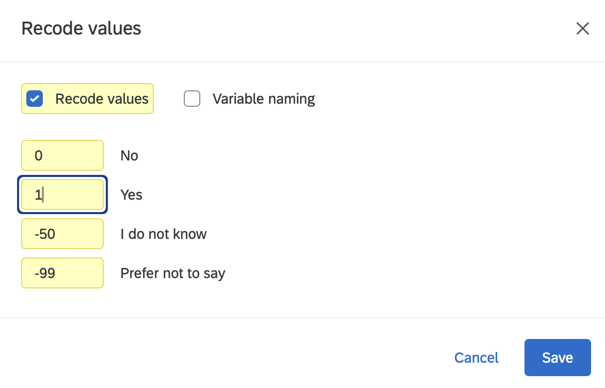
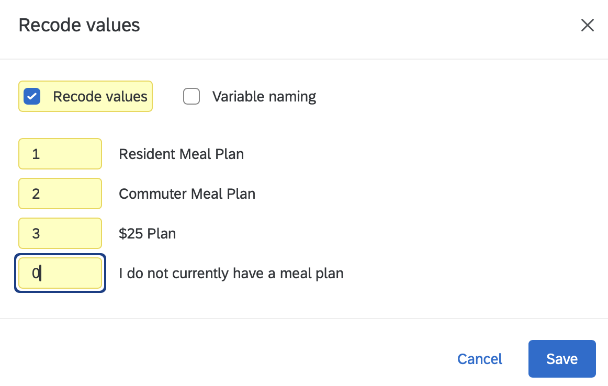
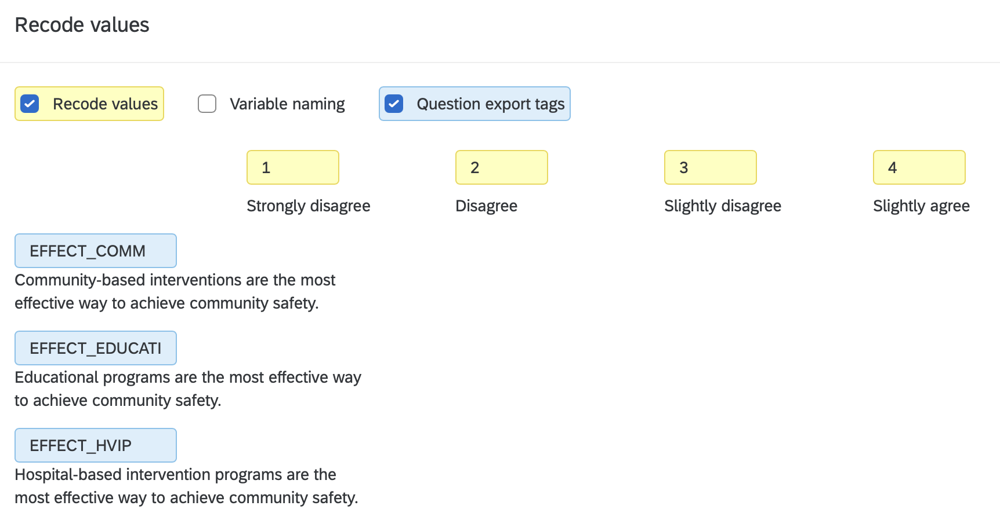
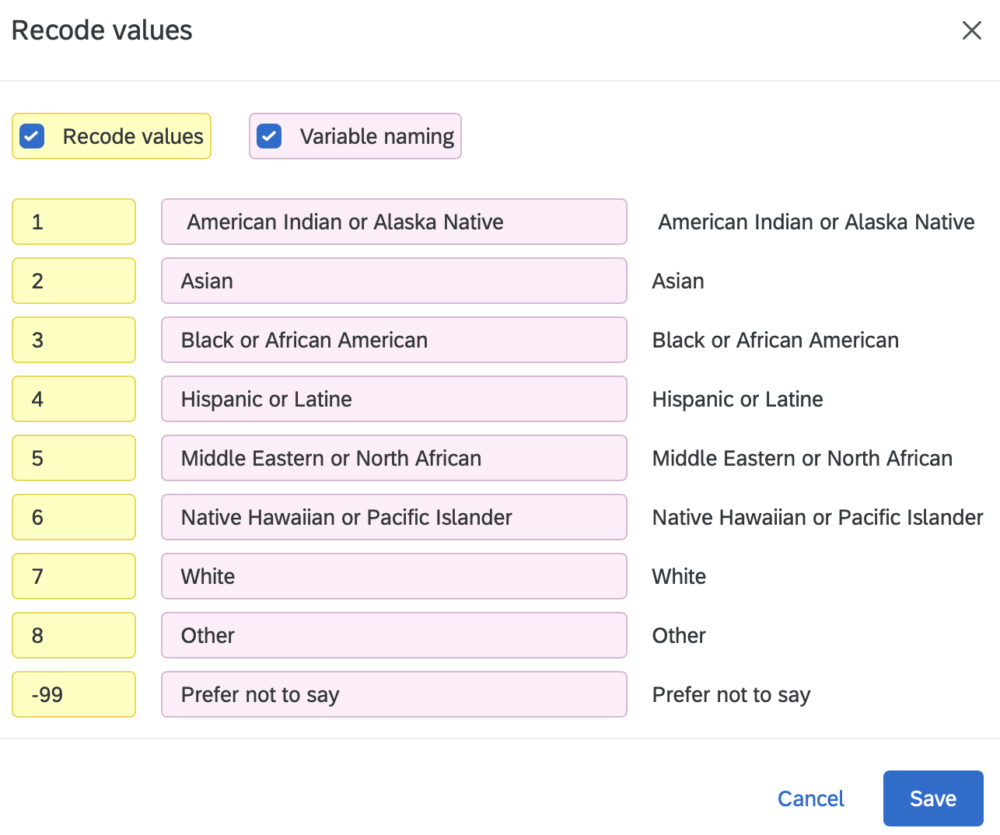
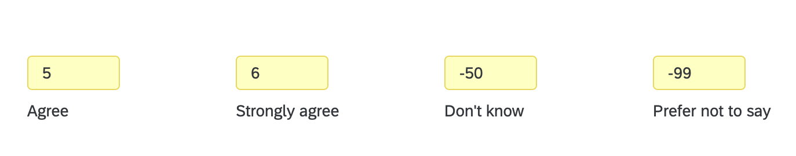
For a matrix (one instruction, several items in rows), the same dialog does both jobs: Variable naming names every row (you did that in Name Your Variables) and Recode values numbers the columns. Check both and you can see the row names and the column values together. The two screenshots below are from other surveys; the first is a single construct (WELLBEING1 to WELLBEING6), the second has subscales (SLEEP_NAP1, SLEEP_TIME1, SLEEP_TIME2, SLEEP_DRINK1, SLEEP_DRINK2).
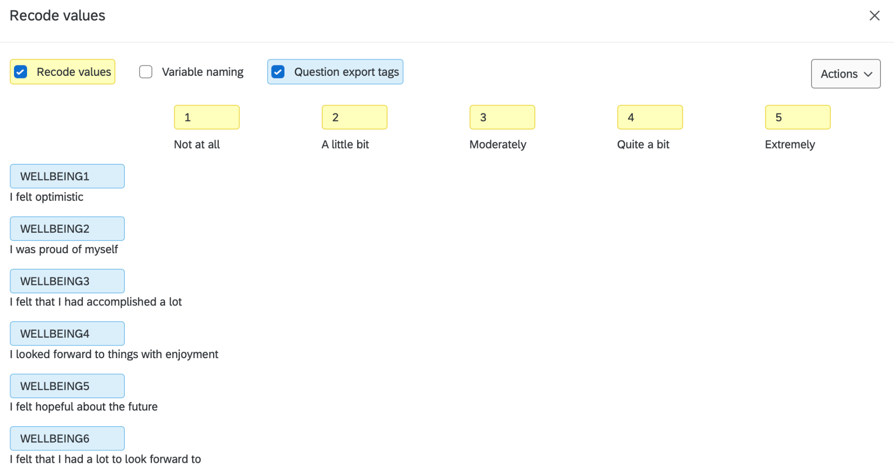
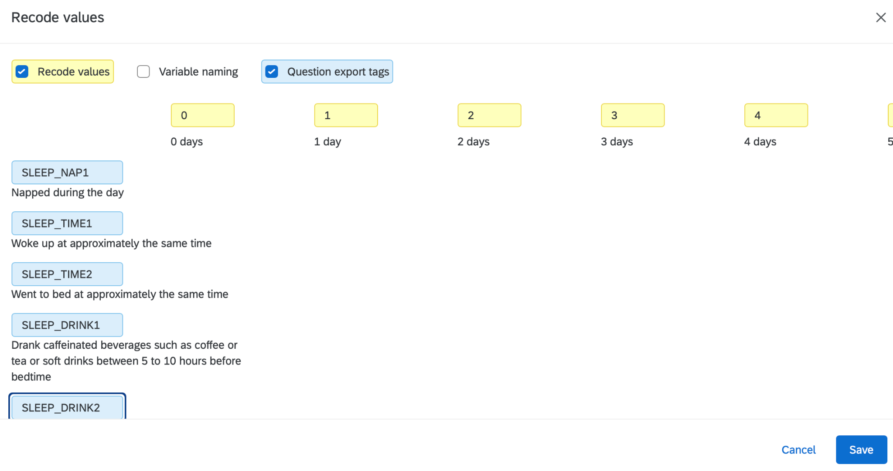
In the first screenshot, Not at all is 1, not 0. The items in a matrix are averaged into a composite (Creating Composites), and almost every published multi-item measure scores its lowest step as 1, so we follow that convention rather than treat “Not at all” as a true zero. Starting at 0 would not change the average in any useful way, and it would put your means out of line with the literature and change the reverse-item formula (6 - x). If you ever need a yes/no version of an item, make it in R with a cut point you report (Transforming Your Data). True zeros (a count of 0 days, “no benefits”) still start at 0.
Qualtrics gives every answer choice a number the moment the choice is created, and it never reuses a number. So if your team once deleted a choice and added a new one, or retyped a choice, the numbers no longer run 1, 2, 3, 4, 5. A five-point agreement scale can export as 1, 2, 4, 5, 6: “Neither” was deleted and re-added, so it became 6, and “Agree” is still 4. Nothing looks wrong on the survey page, because respondents only see the words.
That is why you open Recode values on every question and read the numbers from top to bottom before you publish. If they skip or jump, type the numbers you want (1, 2, 3, 4, 5, in the order the choices appear), and check the exported Word file (7.7) shows the same.
Before you publish, one teammate fills in a codebook, one row per variable, and a second teammate checks every row against Qualtrics. You will paste this table into your Methods section later, and Import Data Once uses it to check that the exported file matches.
Find the Codebook Template (Team Codebook Template.docx) in the Template Assignment folder of the class Google Drive. Make a copy for your team, fill in one row for every variable in your survey, and have a second teammate check it before you click Publish. The template has a column for the owner of each variable (your initials if the variable belongs to your research question, or Team if it is shared), one for whether the variable is quant or qual, and one for whether it is imported into R, NVivo, or both. Save it as TeamCodebook.docx and upload it to your “Team Survey Data” folder next to Draft.TeamSurveyQuestions.docx.
| VARIABLE | QUESTION or item text | TYPE | VALUES | SCALE / subscale |
|---|---|---|---|---|
STIGMA_PUB4_R |
Most people would accept a person with a mental illness as a close friend. | ordered 1–5, reverse | 1 = Strongly disagree … 5 = Strongly agree | STIGMA, public |
DISTRESS7 |
… about how often did you feel depressed? | ordered 1–5 | 1 = None of the time … 5 = All of the time | K10 (DISTRESS) |
TREATED_01 |
Have you ever received treatment for a mental health problem? | binary | 0 = No, 1 = Yes | single item |
BARRIERS_QUAL |
What would make it hard for you to get help? | open-ended text | (text) | single item |
.docx)The Word export is how you see every recode you just made, question by question, on one page. Do it now, while the team is still together.
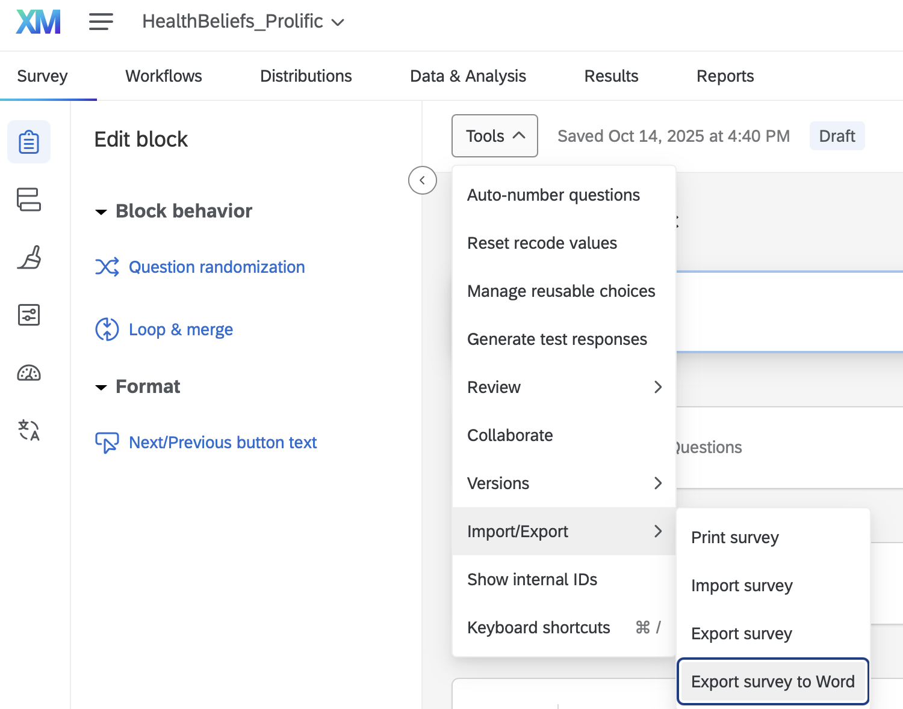
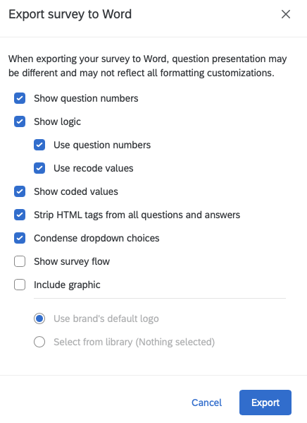
Under Show logic there is a box called Use recode values. It only changes how the survey’s skip logic is written in the document. The box that puts a number next to each answer choice is Show coded values, further down. If your Word file shows “Poor” with no “(1)” after it, that is the box you missed.
After your team completes the steps in this chapter, export the survey to Word with Show coded values checked and read it together to confirm that every recoded numerical value is correct. Mistakes here are irreversible once data collection ends, and they can seriously and negatively affect your team’s poster at the end of the semester. So your team keeps two files in the “Team Survey Data” folder of your Google Drive, and updates them twice:
Draft.TeamSurveyQuestions.docx and TeamCodebook.docx. These should be in your team’s Google Drive by the end of the October 2 lecture, right after your team works through this chapter together.Final.TeamSurveyQuestions.docx and an updated TeamCodebook.docx. These should be in your team’s Google Drive by the end of the October 9 lecture, after your team’s final review, following the steps at the start of Export Survey Data.These are not graded assignments. They are the team’s shared record of what every number in the data means, and your peer mentors and Dr. Shane use them to help you when something in the data looks wrong.